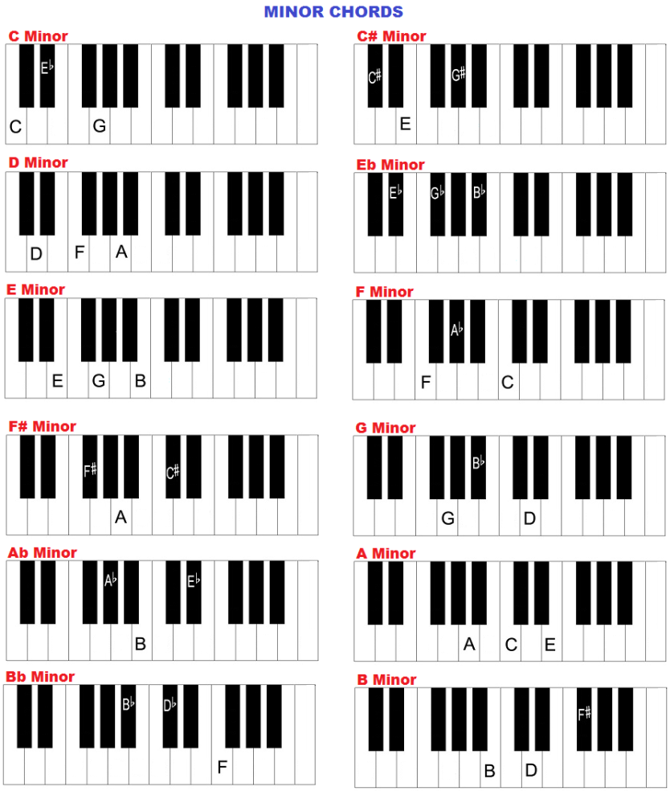
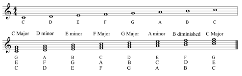

Acordes
Los acordes son unos de los elementos fundamentales de la armonía en la música, ya que cumplen la labor de establecer la base melódica y tonal de una obra. Se definen como acordes musicales a los conjuntos de notas ordenadas en tercera que producen un sonido combinado armonioso. Los acordes se estructuran al determinar una nota fundamental, la que será utilizada para darle un nombre específico al acorde.
Los acordes se clasifican en dos grandes grupos: acordes mayores y menores. Tal como mencionábamos, los acordes mayores son empleados para crear canciones más alegres y coloridas. Por otro lado, los acordes menores suelen emplearse con mayor frecuencia para crear piezas musicales con una atmósfera más oscura. Una de las características más destacables de los acordes mayores es que aportan mayor brillo debido a que se efectúan en una escala más alta.
La diferencia más notable entre acordes mayores y menores es que los mayores tienen una tercera nota mayor, mientras que los menores tienen una tercera nota menor basada en su nota fundamental. Entre otros tipos de acordes también destacan:
• Acordes tónicos. Normalmente, se usan para dirigir la progresión de acordes, ya que provee mayor estabilidad a toda la estructura.
• Acordes dominantes. Son aquellos que se construyen encima del 5° grado de una escala ya establecida.